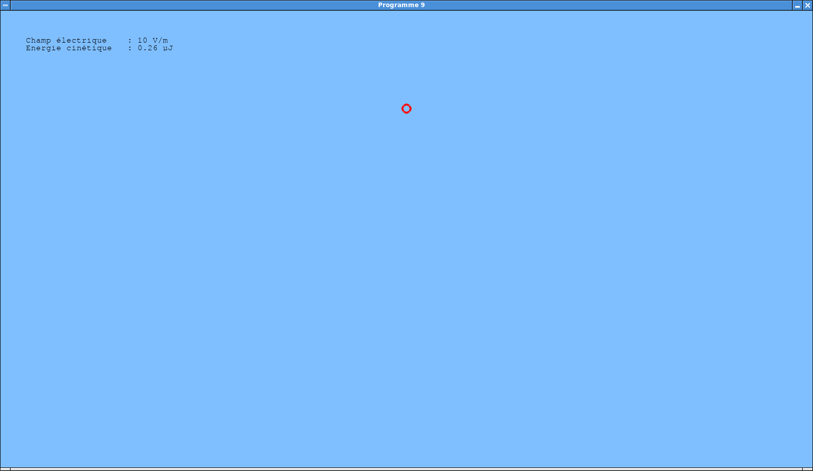
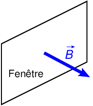
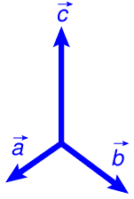
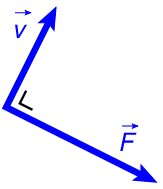
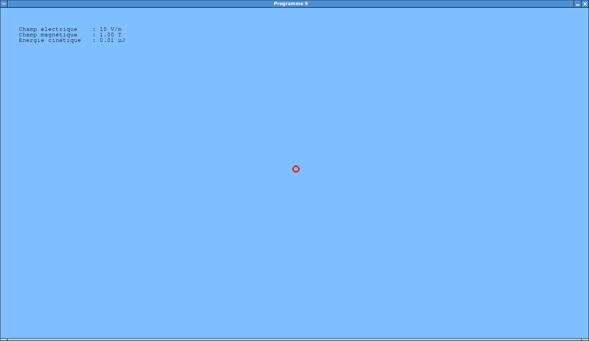
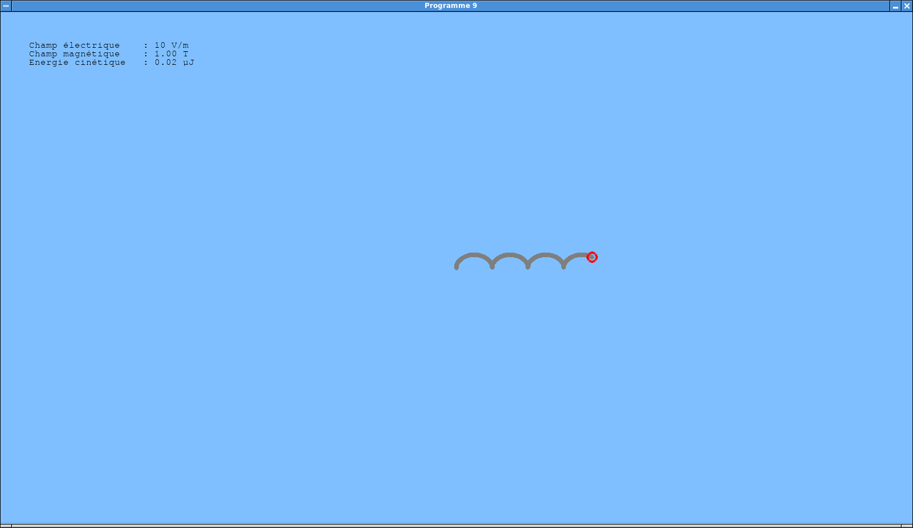
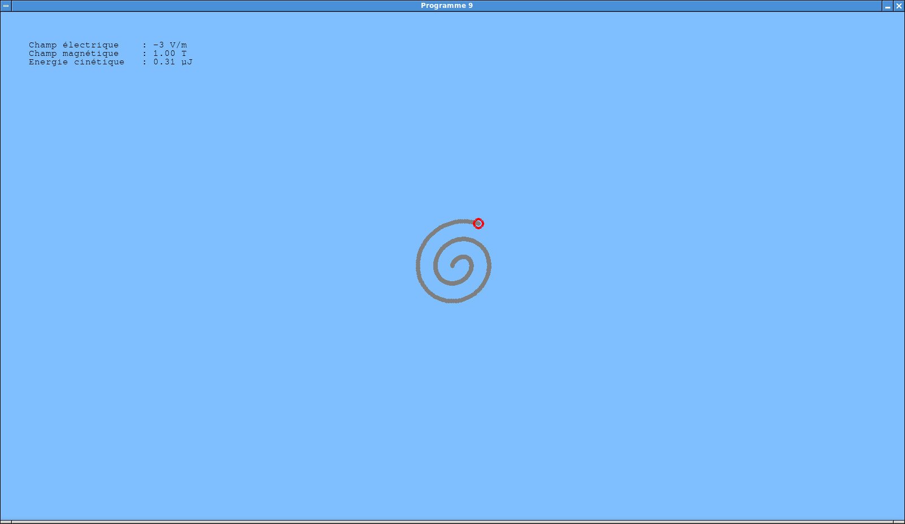

Laboratoire 4¶
Les notions abordées dans ce laboratoire sont les suivantes:
- Mathématique:
- Le produit vectoriel.
- L’arithmétique modulaire.
- Physique:
- Le champ magnétique.
- La force de Lorentz.
- L’accélération centripète.
- La résonance.
- Programmation Python:
- Les buffers circulaires.
Programme 9: Le cyclotron¶
Dans ce projet, vous aller simuler le mouvement d’une charge électrique dans un cyclotron, qui est un accélérateur de particules combinant l’utilisation d’un champ magnétique fixe et d’un champ électrique variable.
Programme de base¶
Le plus simple consiste à se baser sur le programme 3 développé dans le cadre du laboratoire 2, qui simulait le mouvement d’une charge dans un champ électrique.
Vous pouvez recopier ce programme dans un nouveau fichier prog-9.py,
et y apporter les modifications suivantes:
Retirer toutes les fonctions, variables et instructions relatives à la manipulation et à l’affichage des objets chargés électriquement.
Attention: Il ne faut pas supprimer les mécanismes d’affichage du mobile.
Enlever également les lignes de code chargées de calculer et d’afficher l’énergie potentielle du mobile, ainsi que le potentiel électrique à l’endroit du pointeur de la souris.
Dans notre cyclotron, le champ électrique sera uniforme, c’est-à-dire qu’il prendra la même valeur en tous les points de l’espace. Il sera toujours orienté verticalement par rapport à la fenêtre.
Vous pouvez donc définir une variable globale
champ_electrique_vcorrespondant à la composante verticale du champ électrique. Cette variable peut être initialisée à 10 V/m.Le fonction
calculer_champ()destinée à calculer le champ électrique peut alors être remplacée par une fonction qui retourne simplement(0, -champ_electrique_v). Le signe “-“ entraîne qu’une valeur positive dechamp_electrique_vcorrespond à un champ orienté de bas en haut, puisque l’axe vertical du système de coordonnées de la fenêtre est orienté de haut en bas.Enfin, etant donné que le programme simulera un champ électrique et un champ magnétique, une bonne idée est de renommer
calculer_champ()encalculer_champ_electrique()pour éviter toute confusion.Modifier le tableau de bord pour y afficher seulement la composante verticale du champ électrique et l’énergie cinétique du mobile.
Mettre à jour les constantes utilisées dans le programme. Pour cette simulation, nous fixerons la charge du mobile à \(+10^{-10}\) C et sa masse à \(10^{-10}\) kg. Le mobile sera initialement placé au centre de la fenêtre, avec une vitesse nulle.
Note: Tout comme pour le programme 3, nous supposerons qu’un déplacement de 1 pixel dans la fenêtre correspond à une distance de 1 m dans la simulation.
Modifier la boucle de simulation du programme de façon à ce que la fonction de mise à jour du mobile soit appelée pour chaque dixième de milliseconde de temps écoulé.
Cette modification vise à obtenir une simulation suffisamment réaliste. Si un tel pas de simulation conduit à utiliser 100% des ressources CPU de votre ordinateur, vous pouvez l’augmenter.
Tester votre programme. Si vous avez bien respecté les consignes, vous devriez obtenir un affichage semblable à celui-ci:
Programme de base.
Le mobile doit se déplacer de bas en haut. Pour une fenêtre de 900 pixels de haut, il devrait en atteindre le bord supérieur en un peu moins de 10 secondes.
{kind=link}
Champ électrique variable¶
Cette étape consiste à ajouter au programme un mécanisme permettant de faire varier la composante verticale du champ électrique.
Marche à suivre:
Ajouter des instructions de gestion d’évènements dans la boucle principale du programme, de façon à détecter des appuis sur la flèche haute (code
pygame.K_UP) et la flèche basse (codepygame.K_DOWN).Réagir à ces évènements en incrémentant ou en décrémentant la variable
champ_electrique_v, par pas de 1 V/m. Implémenter un garde-fou garantissant que la valeur de cette variable reste toujours comprise dans l’intervalle [-100, 100].Détecter également les appuis sur la barre d’espacement (code
pygame.K_SPACE), qui doivent repositionner le mobile au centre de la fenêtre, avec une vitesse nulle.Tester le bon fonctionnement du programme. Vous devriez être à même de contrôler le déplacement vertical du mobile, en agissant sur la composante verticale du champ électrique.
Modélisation du champ magnétique¶
Nous allons à présent ajouter au système un champ magnétique uniforme, dont l’intensité pourra plus tard être contrôlée. Ce champ sera orienté perpendiculairement au plan de la fenêtre, et dirigé vers l’observateur. Cette situation est illustrée par la figure suivante:
Orientation du champ magnétique.
{kind=link}
Ce champ magnétique induit une force de Lorentz qui affecte le mouvement du mobile. Cette force \(\vec{F}\) est donnée par:
\[\vec{F} = q\vec{v} \times \vec{B},\]
où
- \(q\) est la charge du mobile.
- \(\vec{v}\) est son vecteur vitesse.
- \(\vec{B}\) est le champ magnétique.
Dans l’expression précédente, l’opérateur “\(\times\)” est celui du produit vectoriel. Le produit vectoriel de deux vecteurs \(\vec{a}\) et \(\vec{b}\) est le vecteur \(\vec{c}\) tel que:
- sa direction est perpendiculaire au plan formé par \(\vec{a}\) et \(\vec{b}\), avec une orientation donnée par la règle de la main droite.
- sa norme est égale à \(|\vec{a}|\,|\vec{b}| \sin \theta\), où \(\theta\) est l’angle formé par \(\vec{a}\) et \(\vec{b}\).
Produit vectoriel.
{kind=link}
Dans le cas qui nous intéresse, comme le champ magnétique \(\vec{B}\) est perpendiculaire au plan de la fenêtre et que le mobile se déplace dans ce plan, la force de Lorentz s’exercera dans ce plan. Le champ \(\vec{B}\) étant dirigé vers l’observateur, cette force sera donc orientée de la façon suivante par rapport au vecteur vitesse (pour un mobile de charge positive):
Orientation de la force de Lorentz.
{kind=link}
Voici les modifications à apporter au programme:
Créer une nouvelle variable globale
champ_magnetiquereprésentant la composante du champ magnétique dans la direction perpendiculaire au plan de la fenêtre. Vous pouvez initialiser cette variable à 1 T.Dans le tableau de bord, afficher la valeur de ce champ magnétique, comme dans l’exemple ci-dessous:
Affichage du champ magnétique.
Dans la fonction responsable de mettre à jour la position du mobile, calculer la force exercée sur le mobile, à partir de la charge et du vecteur vitesse de celui-ci ainsi que de la valeur du champ magnétique.
Comme expliqué précédemment, vous devriez obtenir un vecteur perpendiculaire au vecteur vitesse. Si le champ magnétique et la charge du mobile sont positifs, ce vecteur devrait être dirigé vers la droite, par rapport au vecteur vitesse.
Ajouter cette force à celle produite par le champ électrique. Le reste de la fonction, chargée de calculer l’accélération produite par la résultante des forces et de mettre à jour la vitesse et la position du mobile, devrait rester inchangé.
Tester votre programme. Avec les valeurs préconisées pour le champ électrique et le champ magnétique, le mobile devrait se déplacer vers la droite, en effectuant des petites boucles:
Déplacement dans des champs électrique et magnétique.
Note: Le mécanisme permettant d’afficher la trajectoire du mobile sera implémenté plus tard.
Dans le code responsable de la gestion des évènements, ajouter la détection des touches “PageUp” (code
pygame.K_PAGEUP) et “PageDown” (codepygame.K_PAGEDOWN), de façon à ce qu’elles modifient la valeur dechamp_magnetique.Vous pouvez utiliser un pas de 0.01 T, et des valeurs minimale et maximale de \(\pm 1\) T. Une fois ce mécanisme implémenté, vous pouvez initialiser le champ magnétique à 0 lors du lancement du programme.
Tester soigneusement votre programme.
{kind=link}
{kind=link}
Affichage de la trace¶
L’objectif est maintenant d’implémenter un mécanisme capable d’afficher la trace du mobile, comme dans la copie d’écran de l’exemple précédent. Une solution simple consiste à retenir dans une structure de données adaptée un nombre donné de positions précédentes du mobile.
Procédure à suivre:
Avant de rentrer dans la boucle principale du programme, définissez quatre nouvelles variables:
- Une constante
TAILLE_TRACEcontenant le nombre de positions à mémoriser. Dans un premier temps, vous pouvez fixer sa valeur à 100. - Un tableau
tracecontenantTAILLE_TRACEéléments, destinés à contenir les positions mémorisées. - Un entier
nb_tracecontenant le nombre de positions utilisées dans le tableautrace. Initialement, la trace est vide, donc cette variable peut être initialisée à 0. - Un entier
prochain_traceindiquant l’index danstracede l’emplacement dans lequel on placera la prochaine valeur. On peut l’initialiser à 0.
Note: Les instructions d’initialisation de ces variables peuvent être placées dans une fonction
initialiser_trace(), que l’on appellera avant d’entrer dans la boucle principale, mais aussi après un appui sur la barre d’espacement.- Une constante
Définir une nouvelle fonction
ajouter_trace()chargée d’ajouter la position courante du mobile à la trace. Cette fonction doit:- Incrémenter
nb_trace, à condition que sa valeur soit strictement inférieure àTAILLE_TRACE. - Ecrire la position du mobile dans
trace, à l’endroit spécifié parprochain_trace. - Incrémenter
prochain_trace, moduloTAILLE_TRACE. En d’autres termes, si la nouvelle valeur devient égale àTAILLE_TRACE, elle doit être remise à zéro.
- Incrémenter
Définir une nouvelle fonction
afficher_trace(). Celle-ci doit:Balayer les
nb_tracepositions qui précèdentprochain_tracedans le tableautrace.Attention, les index considérés au cours de ce balayage doivent rester dans l’intervalle
[0, TAILLE_TRACE - 1]. Ils doivent donc être calculés en arithmétique moduloTAILLE_TRACE.Pour chaque élément balayé, dessiner un disque gris de 4 pixels de rayon à l’endroit correspondant.
Appeler les fonctions
afficher_trace()etajouter_trace()à chaque itération de la boucle principale (pas à chaque itération de la boucle de simulation!).Vérifier que la trace s’affiche correctement. Ne pas hésiter à augmenter la valeur de
TAILLE_TRACEà 1000 ou même 10000 éléments.
Le cyclotron¶
A ce stade, vous devriez prendre un peu de temps pour réaliser quelques expériences, afin de bien comprendre l’effet qu’ont le champ électrique et le champ magnétique sur une particule chargée.
Observez en particulier l’influence de ces champs sur l’énergie cinétique du mobile. Pouvez-vous trouver un moyen d’augmenter le plus possible cette énergie cinétique sans perdre le mobile de vue?
Si vous avez effectué ces expériences, vous avez probablement remarqué qu’avec un champ magnétique constant et un champ électrique nul, le mobile parcourt un cercle à vitesse constante. Si on donne une valeur positive au champ électrique lorsque le mobile remonte ce cercle (du bas vers le haut de la fenêtre), et une valeur négative lorsqu’il descend, le mobile accélère, donc augmente son énergie cinétique, et parcourt un cercle de rayon plus grand. C’est le principe du cyclotron.
Dans ce projet, notre objectif est d’implémenter un mode spécial du programme dans lequel la valeur du champ électrique sera automatiquement calculée de façon à accélérer le mobile, dans un champ magnétique constant. Le principe de ce calcul est le suivant:
Si le mobile parcourt un cercle à vitesse constante (lorsque le champ électrique est nul), c’est qu’il subit une accélération centripète égale à celle induite par la force de Lorentz.
Appelons \(\omega\) la vitesse angulaire du mobile sur son cercle, en radians par seconde (\(\omega = 2 \pi\) signifie donc que le mobile effectue un tour complet par seconde). La vitesse du mobile vaut alors \(v = \omega r\), où \(r\) est le rayon du cercle.
L’accélération centripète du mobile vaut
\[\frac{v^2}{r} = \omega^2 r.\]L’accélération induite par la force de Lorentz vaut quant à elle
\[\frac{qvB}{m} = \frac{q \omega r B}{m},\]où \(q\) est la charge du mobile, \(m\) sa masse, et \(B\) la composante du champ magnétique dans la direction perpendiculaire à la fenêtre.
En égalant ces deux expressions, on obtient
\[\omega = \frac{qB}{m},\]ce qui signifie que le mobile parcourt
\[\frac{qB}{2\pi m}\]tours par seconde. (En d’autres termes, sa fréquence vaut \(\displaystyle\frac{qB}{2\pi m}\), et sa période vaut \(\displaystyle\frac{2\pi m}{qB}\).)
Il est utile de vous assurer que ce calcul donne les résultats attendus par rapport à la simulation réalisée par votre programme. Vous pouvez par exemple fixer le champ magnétique à 1T, et le champ électrique à 0 V/m, après avoir mis le mobile en mouvement. La période que vous chronométrez est-elle bien égale à celle prédite par cette formule?
Si l’on fait donc osciller périodiquement la composante verticale du champ électrique à une fréquence égale à \(\displaystyle\frac{qB}{2\pi m}\), ce champ entrera en résonance avec le mouvement périodique de la particule dans le champ magnétique, ce qui aura pour effet d’augmenter petit à petit l’amplitude de ce mouvement.
Voici comment implémenter ce mécanisme dans votre programme:
Définir une variable booléeenne
mode_cyclotron, et l’initialiser àFalse.Détecter les frappes sur la touche “C” (code
pygame.K_c), et y réagir en faisant passermode_cyclotronàTrue. Réinitialisermode_cyclotronàFalsesi l’utilisateur modifie manuellement le champ électrique (flèches haute et basse), ou s’il repositionne le mobile (barre d’espacement).Lorsque le programme est en mode cyclotron (
mode_cyclotron == True), appeler une nouvelle fonctioncalculer_champ_cyclotron()à chaque pas de simulation (c’est-à-dire, chaque fois quemettre_a_jour_mobile()est invoquée). Passer comme argument à cette fonction le pas de tempsdtécoulé (normalement égal à 0.0001 s).Le but de la fonction
calculer_champ_cyclotron(dt)est de mettre à jour la valeur dechamp_electrique_v. La procédure est la suivante:Calculer la période \(T = \displaystyle\frac{2\pi m}{qB}\) de l’oscillateur.
Gérer dans cette fonction une variable globale
alphareprésentant la phase \(\alpha\) de l’oscillateur. A chaque appel de la fonction, on met à jouralphaen lui ajoutant\[\frac{2\pi\, \mbox{dt}}{T}.\](En effet, cela signifie qu’après une période \(T\), l’oscillateur aura été incrémenté de \(2 \pi\).)
Note: Après cette mise à jour, il est utile de remplacer
alphaparmath.fmod(alpha, 2 * math.pi)afin de limiter les erreurs numériques.Attribuer à
champ_electrique_vune valeur égale à\[A \sin \alpha,\]où l’amplitude \(A\) du champ peut être fixée à 10 V/m.
Initialiser le champ magnétique à 1T, et tester le programme. En activant le mode cyclotron à partir de la position initiale du mobile, l’affichage devrait ressembler à celui-ci après une quinzaine de secondes:
Cyclotron.
Vous pouvez bien sûr donner une grande valeur, par exemple 10000, à
TAILLE_TRACE. Observez-bien comment l’énergie cinétique du mobile augmente à chaque cycle, par l’effet du champ électrique.Si votre programme fonctionne, le déposer dans le répertoire des laboratoires, avec le suffixe
prog-9.py.
{kind=link}